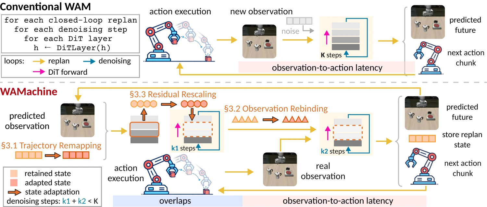
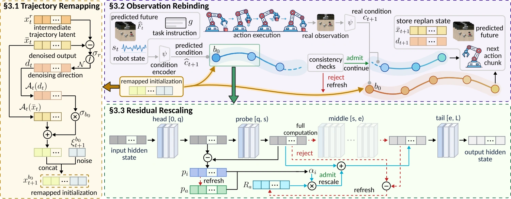
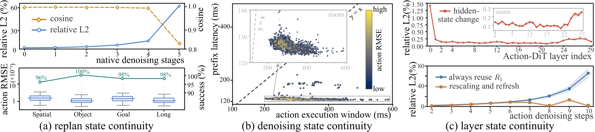

Cosmos Policy
LIBERO · 6,000 episodes / method
98.95%of native average task success retained
98.05%
Native average SR
97.02%
WAMachine average SR
| Suite | Native | WAMachine |
|---|---|---|
| Spatial | 97.40 | 97.00 |
| Object | 99.60 | 99.13 |
| Goal | 97.67 | 96.47 |
| Long | 97.53 | 95.47 |
† Equal contribution.‡ Corresponding author.

Enlarge figureWorld Action Models (WAMs) jointly predict robot actions and future environment evolution, enabling future-aware closed-loop control and planning. However, many WAMs rely on iterative diffusion or flow inference, repeatedly recomputing highly related states across replans, denoising steps, and Transformer layers. This introduces substantial GPU computation and observation-to-action latency.
We observe that WAM inference exhibits strong state continuity: intermediate inference states often remain informative as the control loop and computation evolve. This suggests a different view of WAM inference—not as a sequence of independent solves, but as a continuously evolving stateful process in which useful computation can be preserved and adapted rather than repeatedly discarded.
Based on this insight, we introduce a training-free stateful inference framework that exploits continuity at three levels. Trajectory Remapping carries informative trajectory state across consecutive replans; Observation Rebinding advances inference during physical execution and adapts retained denoising states once the real observation arrives; and Residual Rescaling reuses temporally coherent intermediate representations across adjacent denoising steps to reduce repeated Transformer computation.
Across three representative WAM architectures on LIBERO and RoboTwin 2.0, our framework achieves 1.47–3.05× speedups in observation-to-action latency and 2.23–3.27× speedups in GPU inference time per replan, while retaining 96.69–99.54% of native task success.

Enlarge figureRetain the previous replan’s denoised endpoint and a normalized denoising direction. Remap them to the new planning horizon and reconstruct an initialization at a supported solver stage, leaving fewer denoising steps to perform.
Previous endpoint + direction → remapped initialization
Shift trajectory slots only when the model’s execution protocol requires it. Use fresh noise for uncovered slots and for the first replan.
During action execution, advance a bounded denoising prefix under the predicted future. Keep its latent and solver history. When the real observation arrives, check prediction consistency and either continue the retained solve or restart from the remapped initialization.
Predicted condition → retained prefix → real condition
Anticipatory inference does not issue robot actions. Observation-error thresholds and a cap on consecutive accepted rebindings trigger refreshes.
Run the head and a shallow probe on the current input. Fit a bounded rescaling factor to the retained probe, then reuse the middle-layer residual only when directional agreement and fitting-error checks pass.
Current probe + retained residual → checked continuation
A failed check resumes full middle-layer computation from the already-computed probe and refreshes the reference. Both paths reuse the just-computed head and probe, then execute the tail.
The mechanisms work together, but refresh independently. A rejected anticipatory prefix restarts from the remapped initialization—not necessarily from noise. After observation rebinding, residual reuse still passes its own checks under the real condition. See Section 3 and Appendix B of the paper.
Native: 367.49 ms. WAMachine: 112.52 ms. Speedup: 3.27 times.
Includes foreground and anticipatory DiT work.
Zero-based scale; scales differ between metrics.
Native: 416.64 ms. WAMachine: 136.42 ms. Speedup: 3.05 times.
Real observation available → decoded action ready.
Zero-based scale; scales differ between metrics.
| Method | GPU / replan ↓ ms | Speedup ↑ GPU | O2A latency ↓ ms | Speedup ↑ O2A | Subset SR ↑ % |
|---|---|---|---|---|---|
| Native | 367.49 | 1.00× | 416.64 | 1.00× | 98.0 |
| RTI-DP | 269.27 | 1.36× | 306.64 | 1.36× | 63.0 |
| RTC | 729.27 | 0.50× | 1,959.68 | 0.21× | 82.0 |
| VLA-Cache | 636.89 | 0.58× | 714.84 | 0.58× | 96.5 |
| BAC | 276.12 | 1.33× | 324.39 | 1.28× | 99.0 |
| WAMachine | 112.52 | 3.27× | 136.42 | 3.05× | 97.0 |
Paper Table 1. Each acceleration method is applied independently to Native, not cumulatively. RTI-DP, RTC, VLA-Cache, and BAC are adapted to each WAM; Appendix C documents the adaptations. Faster timing alone does not imply better task success.
6,000 LIBERO episodes per method for each of Cosmos Policy and Fast-WAM-IDM. Motus uses 1,000 Clean and 1,000 Randomized RoboTwin 2.0 episodes per method.
LIBERO · 6,000 episodes / method
| Suite | Native | WAMachine |
|---|---|---|
| Spatial | 97.40 | 97.00 |
| Object | 99.60 | 99.13 |
| Goal | 97.67 | 96.47 |
| Long | 97.53 | 95.47 |
LIBERO · 6,000 episodes / method
| Suite | Native | WAMachine |
|---|---|---|
| Spatial | 99.27 | 98.80 |
| Object | 99.67 | 98.87 |
| Goal | 98.47 | 98.00 |
| Long | 97.00 | 96.93 |
RoboTwin 2.0 · 2,000 episodes / method
| Suite | Native | WAMachine |
|---|---|---|
| Clean | 86.50 | 84.30 |
| Randomized | 85.70 | 82.20 |
Paper Table 2. Retention = WAMachine average success / Native average success × 100%. It is not an absolute success rate, and it is separate from the 200-episode subset SR above. Displayed averages and retention are transcribed from the paper, including its rounding.

Enlarge figureWith CUDA Graphs disabled, stateful inference still provides 2.53× GPU inference speedup and 2.54× O2A speedup over Native in the Fast-WAM-IDM ablation. The complete system has the lowest O2A latency among the tested variants.
| Variant | TR | OR | RR | Graph | GPU / replan ↓ ms | O2A ↓ ms | Subset SR ↑ % |
|---|---|---|---|---|---|---|---|
| Native | – | – | – | – | 415.19 | 470.96 | 97.5 |
| Native (CUDA Graphs) | – | – | – | ✓ | 295.29 | 350.25 | 98.0 |
| WAMachine | ✓ | ✓ | ✓ | ✓ | 114.75 | 144.75 | 98.0 |
| w/o Trajectory Remapping | – | ✓ | ✓ | ✓ | 188.02 | 177.20 | 97.0 |
| w/o Observation Rebinding | ✓ | – | ✓ | ✓ | 108.45 | 165.62 | 95.5 |
| w/o Residual Rescaling | ✓ | ✓ | – | ✓ | 188.99 | 205.45 | 99.0 |
| w/o CUDA Graphs | ✓ | ✓ | ✓ | – | 163.99 | 185.15 | 97.5 |
Paper Table 3. TR: Trajectory Remapping; OR: Observation Rebinding; RR: Residual Rescaling. The ablation is measured in separate runs from Table 1; times are reported as given, not mixed across tables. Removing OR reduces GPU work but increases O2A latency, illustrating the distinction between compute savings and overlap.
@misc{liu2026wamachine,
title = {Efficient World Action Model Inference with
Adaptive Intermediate States},
author = {Liu, Zhinan and Han, Haozhi and Zhang, Ruge and
Ma, Teng and Ma, Tao and Liu, Zheng and
Chen, Yifeng and Zhang, Yunquan and Cao, Ting and
Liu, Yunxin and Li, Kun},
year = {2026},
note = {Manuscript}
}Manuscript citation. No arXiv identifier or publication venue is claimed. Download .bib ↗